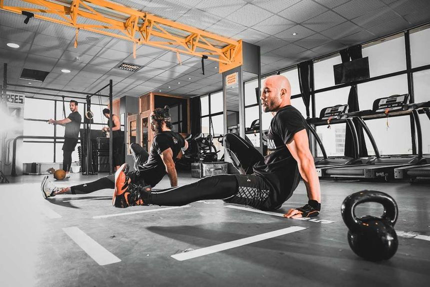
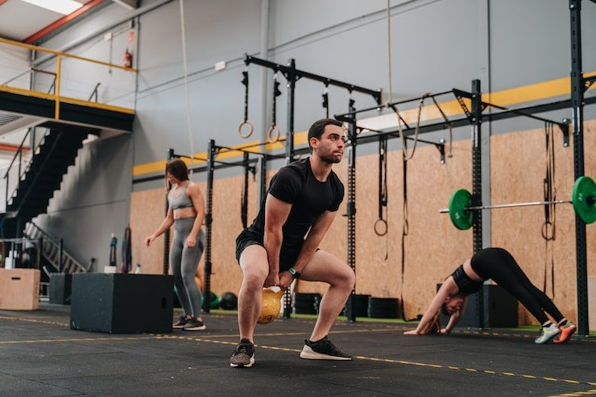
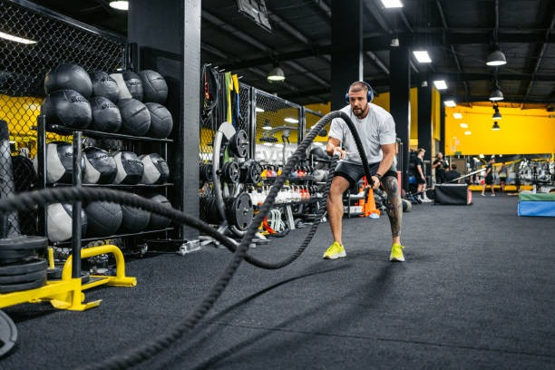
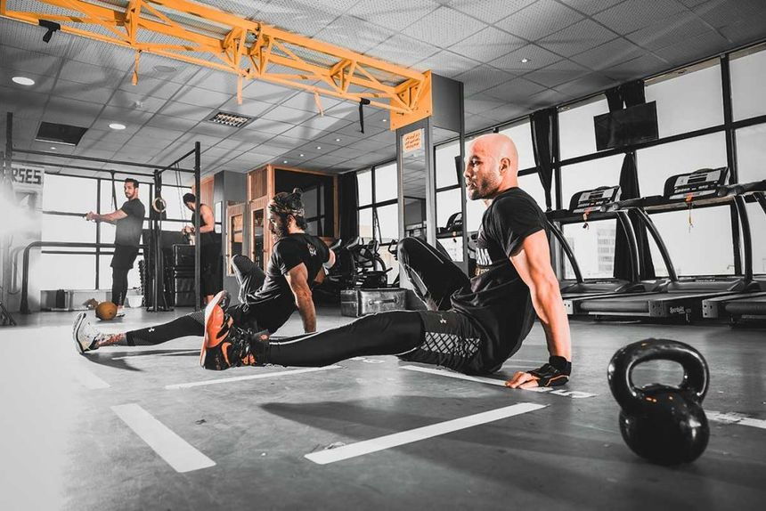
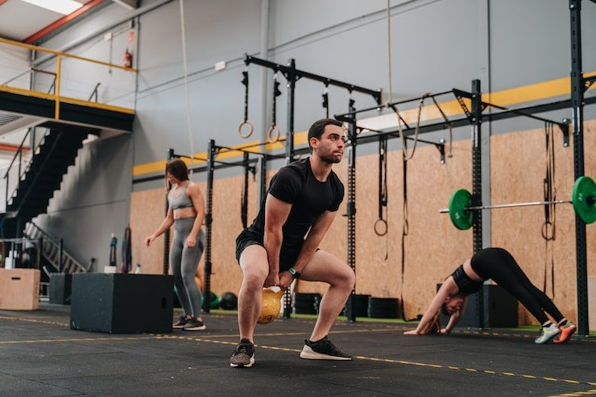
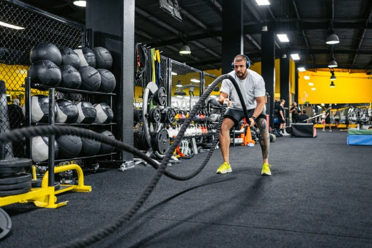

CROSSFIT
CROSSFIT
Nacimos con la idea de crear un espacio diferente, donde el entrenamiento fuera funcional, efectivo y accesible para todos, sin importar el nivel o la experiencia.
Entrenamos bajo la metodología CrossFit, basada en movimientos funcionales, constantemente variados y ejecutados a diferentes niveles de intensidad.
Nuestra misión es transformar vidas utilizando el CrossFit como vehículo, proporcionando coaching excepcional y programación funcional para forjar atletas mental y físicamente resilientes, superando límites y fomentando una vida activa y fuerte.
Ser el referente líder en fitness funcional y la comunidad de CrossFit más influyente, reconocida por nuestra excelencia y cultura de apoyo, inspirando un estilo de vida saludable y activo para todos nuestros miembros, de por vida.
 





"No se trata solo de levantar pesas o registrar tiempos; se trata de construir la mejor versión de ti mismo. Si estás listo para dejar atrás las excusas y unirte a una comunidad que te retará y te apoyará en cada paso, es hora de empezar. Tu transformación comienza hoy mismo."
Inscribete